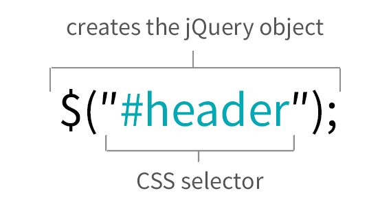
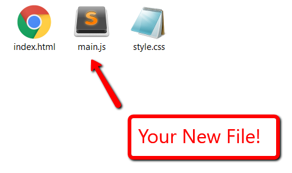
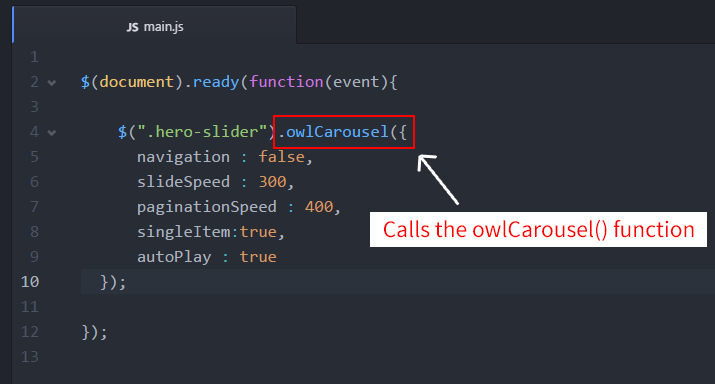

Introduction to jQuery
Section 1
What is jQuery?
jQuery is a JavaScript library that makes writing JavaScript for websites easier and more browser friendly.
jQuery is used to make your website more dynamic! Write less, do more.
How do we add the jQuery library to our site?
Before you can start coding jQuery, the library needs to be added to your site.
It should go in the head section of your HTML. Take a second to add this line of code to your site.
<script src="https://ajax.googleapis.com/ajax/libs/jquery/3.0.0/jquery.min.js"></script>
Document Ready
In order for jQuery to manipulate HTML, it needs to make sure that the HTML is fully loaded before running the jQuery.
$(document).ready(function(event){
// jQuery code goes in here
});
So whenever you write jQuery, you'll need to wrap that code in a document.ready function, as shown below:
$()
$() is a shortcut for jQuery(). The $() is made for selecting an element and then returning that element to perform an action on it.
jQuery Selectors
The following code selects the element that has the ID header in the HTML.
This is how you access HTML elements with jQuery. Once you have the element in the jQuery object, you can do stuff to it.
Where do we write our jQuery?
Create a new file in Sublime Text called main.js. Save it to your project folder.
Add the following line of code to your index.html file right BEFORE the closing </body> tag.
<script src="main.js"></script>
Enough Talk: Let's Code!
In your new main.js file, add the following jQuery:
$(document).ready(function(event){
$('body').prepend("<p>Test</p>");
});
Feel free to change the body tag to something else, like maybe #footer or change the 'test' text inside the paragraph tags to something else!
Comments
Just like in HTML and CSS, comments are for developers and are not interpreted by the browser.
Your code has two sets of comments. They show the two different ways of formatting comments.
Comments
One is to surround the comment by /* on one side and */ on the other. These comments can be multiple lines long.
/* This comment
is three
lines long. */
Two is to have // before the comment. This kind of comment can only be one line long.
// This comment is only one line long.
jQuery Plugins
Don't Reinvent the Wheel
Because jQuery is widely used, a lot of people have created jQuery code(plugins) that you can download and easily add to your own site.
Using jQuery Plugins on Your Site
jQuery plugins will come with an external file that you will need to download and reference in your site. Then you 'initialize' their jQuery by connecting it to one of your own HTML elements.
Real world example: Slideshow
Now we're going to step through together how to add a slideshow jQuery plugin.
Start by Googling 'Owl Slider' or go to: http://owlgraphic.com/owlcarousel/
Download OWL Carousel
- Click the 'Download for FREE' button at the top.
- Unzip the owl.carousel folder. Then open that folder and copy the entire owl-carousel folder (not the demos or assets folder).
- Then paste it into your project's folder.

Enough Talk: Let's Code!
Add the file references to your HTML
In the head tag section of your HTML, add these 2 stylesheets:
<link rel="stylesheet" type="text/css" href="owl-carousel/owl.carousel.css" />
<link rel="stylesheet" type="text/css" href="owl-carousel/owl.theme.css" />
AFTER your jQuery script tag, but BEFORE your main.js script tag, add the following:
<script src="owl-carousel/owl.carousel.min.js"></script>
Enough Talk: Let's Code!
Setup Your HTML Markup
In your HTML, add the following HTML where you want your slider to appear.
<div class="slideshow">
<div>Content</div>
<div>Content</div>
<div>Content</div>
</div>
Enough Talk: Let's Code!
Add in your Slider Images
Download 3 images from the internet and put them in your project folder.
Each time it says 'Content' in the HTML, replace the word Content with an img tag.
<div class="slideshow">
<div><img src="captain.png" /></div>
<div><img src="hyperlink.png" /></div>
<div><img src="cape.png" /></div>
</div>
Initialize your jQuery slider
In your main.js file, add the following code:
/* Get The Document Ready! */
$(document).ready(function(event){
// Owl Slider
$('.slideshow').owlCarousel({
navigation : false,
slideSpeed : 300,
paginationSpeed : 400,
singleItem:true,
autoPlay : true
});
});
jQuery Functions
Funtions are a way of reusing code in JavaScript.
The .owlCarousel function lets you reuse all the owl carousel code to create a slider.
jQuery Options
jQuery plugins have options which allow you to customize the way the plugin works and displays on the page.
The plugin documentation explains what options there are and what values you can put in them. Sometimes the documentation refers to options as settings.
Enough Talk: Let's Code!
Explore the Owl Slider options and update your slider.
Resources
Homework!
Add one of these jQuery Plugins to your site:
- Create a popup window called a lightbox using the Fancybox plugin.
- Use the funnyText plugin to create some funky text on your page.